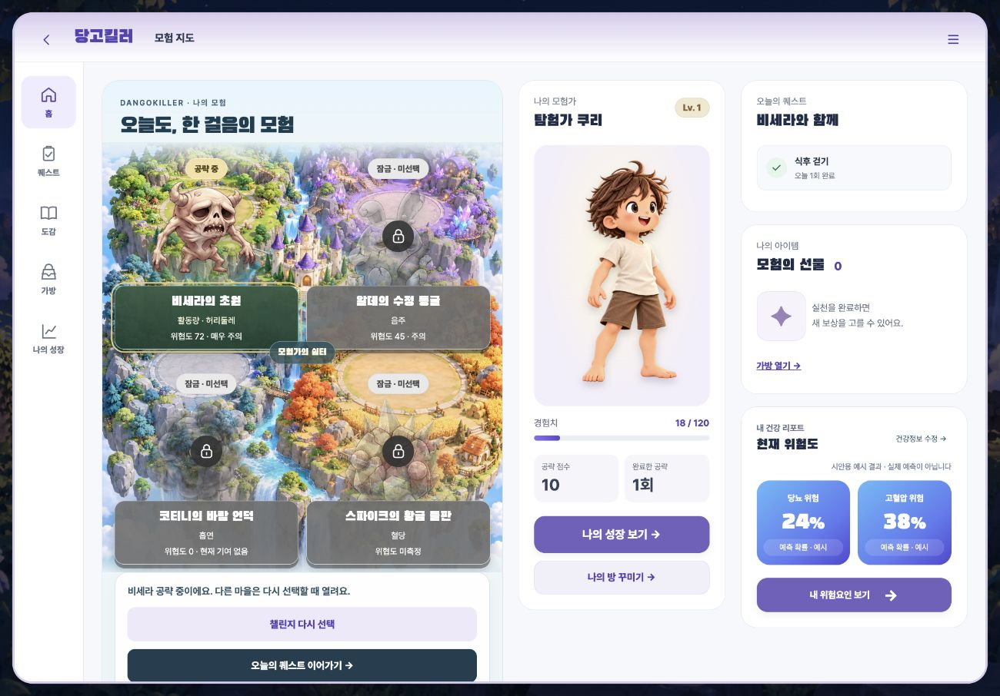

병원 실습과 근무를 하면서 가장 많이 만난 질환이 당뇨와 고혈압이었습니다. 그런데 진단을 받기 전까지는 대부분 건강검진 수치를 보고 “좀 위험한가?” 하고 넘깁니다. 수치는 알아도 생활은 그대로였습니다.
그래서 평소에 지킬 수 있는 작은 생활습관을 만들어 주고 싶었고, 지루하지 않도록 게임을 택했습니다. 내 건강 위험을 나쁜 몬스터로 만들면 경각심이 더 생기지 않을까 싶어, 위험을 끌어올린 요인을 몬스터로 설정했습니다.
DANGO
당고킬러
병원 실습과 근무를 하면서 가장 많이 만난 질환이 당뇨와 고혈압이었습니다. 그런데 진단을 받기 전까지는 대부분 건강검진 수치를 보고 “좀 위험한가?” 하고 넘깁니다. 수치는 알아도 생활은 그대로였습니다.
그래서 평소에 지킬 수 있는 작은 생활습관을 만들어 주고 싶었고, 지루하지 않도록 게임을 택했습니다. 내 건강 위험을 나쁜 몬스터로 만들면 경각심이 더 생기지 않을까 싶어, 위험을 끌어올린 요인을 몬스터로 설정했습니다.
| 역할 | 한 일 |
|---|---|
| 기획 | 몬스터 공략형 챌린지 콘셉트 제안 및 세부 규칙 설계 |
| 팀장 | 업무 분배 · 데일리 스크럼 |
| 문서 | 요구사항 · 테이블 · API 명세 관리 |
| 개발 | 코드 통합 · 회원정보·로그인 화면 |
01점수와 위험도 분리
02일일 기록 선택 입력직접 변경
03이미 진단받은 사용자

게임으로 만들되 건강 정보를 왜곡하지 않도록 팀이 함께 원칙 세 가지를 정했습니다. 확률은 보여 주되 진단하지 않고, 챌린지 점수와 실제 위험도를 섞지 않고, 못 한 날에 감점하지 않습니다.
팀장으로서 업무를 4개 파트로 나누고 매일 스크럼으로 진행 상황을 확인했습니다. 의견을 나눌 때는 “이건 이래서 아쉬운데, 이렇게 하면 어떨까요?”처럼 대안을 같이 내는 식으로 이야기했고, 그렇게 서로의 의견을 받아들이면서 기획과 개발을 진행하였습니다.
중간에 팀원 반절이 퇴소해 남은 사람의 업무가 크게 늘었습니다. 팀장으로서 방향이 흔들리지 않게 다시 확인하며 빠진 파트를 나눠 맡으면서 AI 도구를 적극적으로 활용해 일정을 맞췄습니다.